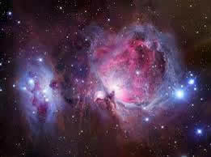
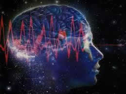
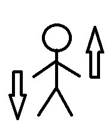

ENERGIA
A maioria dos indivíduos se define pelo corpo finito, mas você não é um corpo finito. Mesmo sob o microscópio, você é um campo de energia. O que nós sabemos sobre energia é isto: você pergunta ao físico quântico “O que cria o mundo?” e ele dirá: “A energia”. Ora, descreva energia.
“Tudo bem: ela não pode ser criada nem destruída, ela sempre foi e sempre tem sido tudo o que sempre existiu; ela está entrando na forma, atravessando a forma e saindo da forma.”
Se perguntar a um a um teólogo: “O que criou o universo?” Ele dirá: “Deus”. Então descreva Deus. “Sempre foi e sempre será, não pode ser criado nem destruído, tudo o que sempre foi e para sempre será, e sempre se transformando.” Viu só? É a mesma descrição, mas com outra terminologia.
Então, se você se julga esse “invólucro de carne” que circula por aí, pense duas vezes. Você é um ser espiritual! Você é um campo energético, operando num campo energético mais amplo.
Tipos de energia
A matéria de Física que nos é ensinado na escola fala de diversos tipos de energia: a cinética, solar, elétrica e etc. Mas aqui serão abordados os tipos de energia que infelizmente não nos é ensinado nas escolas, as Bioenergias. As bioenergias são de dois tipos: imanente e consciencial.
BIOENERGIAS
No universo, existem dois tipos de energias: a imanente e a consciencial. Imanente é a energia cósmica, da natureza, encontrada em todo lugar. Energia consciencial é a imanente modificada por nós por meio dos nossos processos energéticos, pensamentos e sentimentos. As energias que produzimos nos afetam, bem como a todos os nossos semelhantes e os ambientes que freqüentamos.
| Exemplos de energia imanente: |  | |
| Exemplos de energia consciencial: |  |
A energia individual ou consciencial indica imediatamente a condição na qual o indivíduo se encontra. Com um simples pensamento que emitimos, atraímos consciências que estão no mesmo padrão energético. Por isso, precisamos ficar atentos aos ambientes que freqüentamos, às pessoas com as quais nos relacionamos e, principalmente, aos pensamentos e sentimentos que cultivamos.
Quem está sempre feliz e apresenta uma postura positiva em relação à vida gera energias positivas e atrai amparadores espirituais. Amparador espiritual, também conhecido por mentor, mestre, companheiro espiritual, protetor astral invisível, guardião astral, guia espiritual, anjo da guarda, é uma consciência real e atuante, que nos auxilia durante o nosso percurso de vida na Terra.
Por outro lado, uma pessoa com conteúdos de raivas, ranços, inveja, ciúmes e todo tipo de sentimentos disfuncionais, cria para si mesmo uma aura com este padrão e afeta os ambientes com este padrão energético. Dessa forma, atrai para si assediadores espirituais. O nosso padrão energético é o resultado da energia que geramos e acumulamos ao longo do tempo. Por isso, temos que gerar a maior parte do tempo energias de bom padrão.
Quanto tempo você tem investido em leituras agradáveis e contato com pessoas divertidas? Há, sem dúvida, pessoas que já nascem com a habilidade para enfrentar determinadas situações com mais tranqüilidade e com melhor estado de espírito. Mas essa capacidade pode ser desenvolvida, a partir da adoção de hábitos mais saudáveis.
Os amparadores possuem a energia mais sutil que a nossa. Qualquer alteração energética poderá afastá-los de nós. Portanto, sempre que percebermos pensamentos negativos, devaneios, instabilidade emocional, devemos circular energia e elevar nossos pensamentos.
MBE = Mobilização Básica de Energias
A mobilização básica de energias se refere às técnicas de domínio energético das energias imanente e consciencial. Elas são de quatro espécies:
Circulação fechada, estado vibracional, exteriorização e absorção.
| Exteriorização | Absorção |
| Circulação fechada | Estado Vibracional |
|  |
O que é e para que serve o estado vibracional (EV)?
O Estado vibracional é a condição técnica de dinamização máxima das energias do holochacra ou energossoma através da impulsão da vontade.
Com a instalação do EV, a pessoa coloca suas energias em movimento, o que produz diversos efeitos positivos. Por isso, o estado vibracional pode ser considerado uma das mais importantes técnicas da Conscienciologia, pois:
- É através dele que passamos a dominar nossas bioenergias e a conhecer nosso holochacra.
- O EV profilático possibilita a autodefesa íntima perante as intrusões energéticas doentias, comuns no dia-a-dia.
- A prática constante do EV permite o reequilíbrio não só de nosso holochacra, mas de todo o conjunto de corpos ou veículos de manifestação da consciência.
- É possível, através do EV, promover experiências fora do corpo e, com isso ampliar nossa autoconscientização multidimensional.
Como instalar o Estado Vibracional?
O EV pode ser produzido de diversas formas, inclusive de modo involuntário. A técnica da autodefesa se assenta em seis manobras básicas que exigem perseverança.
1 – Pés. Fique ereto, com os pés separados um do outro. Cerre as pálpebras. Deixe os braços caírem ao longo do corpo. Dirija o fluxo de sua bioenergia, pela impulsão da vontade, da cabeça até as mãos e os pés. Se não sabe o que é bionergia, não importa. As práticas lhe mostrarão a breve tempo, a realidade energética. Se nada sentir nas primeiras tentativas, insista mesmo assim. Acabará sentindo, porque a EC, ou energia consciencial é da sua parafisiologia inevitável relativo, relativa ao holochacra (seu corpo energético, constituído por todos os chacras).
2 – Cabeça. Traga de volta o fluxo da sua EC, por sua vontade decidida, dos pés até a cabeça. Identifique então através das suas sensações ou vivências autocríticas, a direção do fluxo da EC de baixo para cima, nitidamente contrário ao fluxo anterior.
3 – Discriminação. Repita este procedimento 10 vezes, sentindo e discriminando o fluxo da EC varrendo os órgãos do seu soma. Assim começam os desbloqueios e as compensações das ECs em seus centros energéticos ou chacras básicos.
4 – Velocidade. Aumente, gradualmente, a velocidade ou ritmo da impulsão do fluxo da EC, por intermédio da força da impulsão de sua vontade decidida.
5 – Intensidade. Expanda, ao máximo, a intensidade ou o volume do fluxo da EC que passará a compor circuitos cada vez maiores e mais potentes, por dentro e por fora do seu corpo. Você perceberá isso perfeitamente. Este fato convence você desta realidade.
6 – EV. Instale, por fim, o Estado Vibracional. O fluxo e o circuito fechado desaparecem. Toda a sua psicosfera energética torna-se completamente acesa, feérica ou incandescente com a EC vibrante e você sente sem qualquer dúvida.
Repetições. Repita todo o procedimento, de início 20 vezes por dia, em condições situações e circunstâncias diferentes.